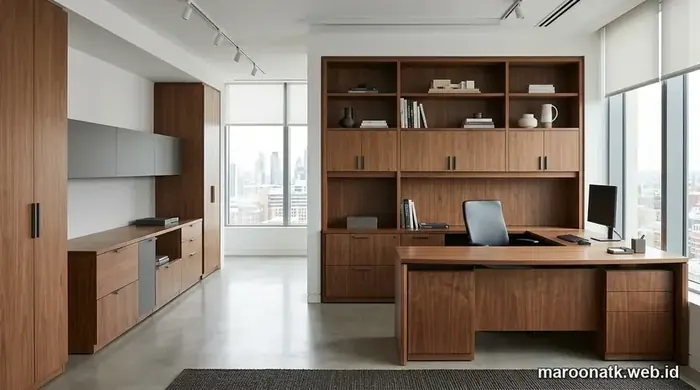

Memahami Total Cost Efisiensi Custom Furniture Kantor
Custom furniture kantor terbukti lebih hemat karena mengoptimalkan 100% luas lantai sewa, mengeliminasi ruang mati (dead space) di sekitar pilar gedung, serta mengintegrasikan meja kerja workstation, kabinet penyimpanan vertikal, dan saluran kelistrikan dalam satu sistem modular yang kokoh. Pendekatan ini menekan total cost of ownership (TCO) hingga 25–40% lebih rendah dalam jangka menengah dibanding membeli furniture siap pakai yang tidak sesuai ukuran ruang.
Ketika merencanakan renovasi atau ekspansi ruang kerja, purchasing team dan manajemen operasional sering kali dihadapkan pada dilema: memilih membeli furniture pabrikan siap pakai (ready stock) dari katalog retail atau memesan custom furniture kantor yang dibuat khusus sesuai denah ruangan. Di atas kertas, harga beli satuan produk siap pakai kerap terlihat lebih terjangkau. Namun, ketika diterapkan pada denah gedung perkantoran nyata—yang sering kali memiliki pilar struktural tebal, dinding tidak siku, atau koridor sempit—furniture siap pakai justru memicu inefisiensi biaya operasional yang sangat besar.
Di kota-kota pusat bisnis dengan harga sewa ruang komersial yang tinggi, setiap meter persegi lantai kantor bernilai rupiah yang harus dipertanggungjawabkan setiap bulan. Membiarkan sudut ruangan kosong atau menyisakan celah 30–50 cm di antara pilar dan meja kerja sama saja dengan membuang anggaran sewa perusahaan secara sia-sia. Untuk itulah, memahami bagaimana pendekatan kustomisasi furniture dapat menekan biaya total kepemilikan menjadi strategi procurement yang sangat vital bagi korporasi modern.

Harga Paket Furniture Kantor Workstation Jakarta Terbaru
Rincian estimasi biaya pengadaan paket meja workstation modular staf dan pimpinan untuk perusahaan B2B.
Permasalahan Furniture Siap Pakai pada Denah Ruangan Tidak Standar
Furniture siap pakai diproduksi massal dengan dimensi modul kaku (misalnya meja ukuran standar 120x60 cm atau lemari lebar 90 cm). Ketika unit-unit ini ditempatkan di dalam gedung komersial, sejumlah permasalahan teknis kerap muncul:
- Space Kosong yang Tidak Produktif (Dead Space): Sering kali meja tidak dapat merapat ke dinding karena terhalang pilar gedung, menyisakan celah sempit yang menjadi sarang debu, tumpukan kabel kusut, dan tidak bisa dimanfaatkan untuk aktivitas kerja apapun.
- Kapasitas Tempat Duduk Berkurang: Ruang kerja yang seharusnya mampu menampung 12 staf dengan konfigurasi custom benching terpaksa hanya memuat 8 staf karena ukuran furniture retail yang memakan sirkulasi lorong.
- Inefisiensi Penyimpanan (Storage Gap): Lemari arsip pabrikan memiliki ketinggian standar (180–200 cm), menyisakan ruang kosong 1 meter di bawah plafon yang terbuang percuma, alih-alih dijadikan full-height cabinet penyimpanan dokumen legal.
- Kabel dan Jalur Data Berantakan: Furniture retail jarang dilengkapi jalur wire-management tersembunyi yang terintegrasi dengan stopkontak lantai (floor socket), menuntut penambahan kabel roll tambahan yang merusak estetika dan membahayakan keselamatan kerja (K3).
Tabel Perbandingan: Custom Furniture vs Furniture Siap Pakai
Berikut adalah matriks komparasi menyeluruh antara custom furniture kantor dan furniture siap pakai pabrikan untuk membantu purchasing officer mengambil keputusan investasi sarana kantor:
| Aspek Evaluasi | Custom Furniture Kantor | Furniture Siap Pakai (Ready Stock) |
|---|---|---|
| Ukuran & Dimensi | Dibuat presisi per milimeter mengikuti kontur dinding, pilar, dan lekukan ruang | Ukuran standar pabrik yang kaku dan tidak dapat disesuaikan di lapangan |
| Fleksibilitas Desain | Bebas memilih bentuk (L-shape, curved, benching), warna HPL, dan tata letak partisi | Terbatas pada model dan opsi warna yang tersedia di dalam katalog pabrikan |
| Pemanfaatan Ruang | Maksimal 100%, memanfaatkan sudut miring dan ruang vertikal hingga plafon | Menyisakan celah mati (dead space) sebesar 15–30% di sekitar pilar/dinding |
| Pilihan Material | Bisa dispesifikasikan (Plywood grade A, MFC E1 anti lembab, edging PVC 2mm, baja powder coating) | Material standar mass-production (sering menggunakan particle board tipis mudah rapuh) |
| Waktu Pengadaan | Memerlukan waktu fabrikasi 14–28 hari kerja sesuai kapasitas pesanan | Cepat (1–5 hari kerja) selama stok unit di gudang distributor tersedia |
| Potensi Space Kosong | Nol persen (0%), seluruh area terintegrasi secara mulus dan fungsional | Tinggi, menciptakan celah sempit tidak terpakai yang sulit dibersihkan |
| Cocok Untuk | Kantor sewa komersial, gedung dengan pilar besar, kantor pusat beridentitas korporat | Kebutuhan darurat kilat, ruangan kotak persegi standar tanpa halangan arsitektur |
| Efisiensi Jangka Panjang | Sangat tinggi karena daya tahan material kuat dan memaksimalkan ROI biaya sewa gedung | Rendah jika ruangan sempit, biaya perbaikan tinggi akibat material cepat rusak |

Pemanfaatan ruang terintegrasi: lemari arsip full-height dan meja executive custom menyatu mulus pada lekukan dinding ruang direksi tanpa menyisakan ruang kosong sia-sia.

SOP Pengadaan Furniture Kantor B2B: Panduan Lengkap Purchasing
Tahapan standar operasional prosedur pengadaan sarana kantor: dari seleksi vendor berbadan hukum PT hingga audit serah terima BAST.
5 Faktor Kunci Penghematan Biaya dengan Custom Furniture
Mengapa custom furniture kantor mampu menghasilkan efisiensi biaya yang nyata? Berikut adalah penjabaran 5 aspek teknis dan finansial yang mendasarinya:
1. Penghematan Biaya Sewa Luas Lantai (Square Meter Optimization)
Biaya sewa gedung perkantoran di kawasan bisnis premium dihitung per meter persegi per bulan. Jika ruang kantor seluas 100 m² memiliki 15% dead space akibat penataan furniture pabrikan yang tidak pas di sekitar pilar, perusahaan secara efektif membayar biaya sewa 15 m² sia-sia setiap bulannya. Dengan custom furniture, layout dirancang presisi hingga sudut terkecil sehingga seluruh luas lantai menghasilkan nilai produktivitas kerja.
2. Eliminasi Kebutuhan Membeli Furniture Tambahan
Desain kustom memungkinkan integrasi multi-fungsi dalam satu struktur unit. Sebagai contoh, meja kerja staf modular dapat dirancang langsung menyatu dengan mobile pedestal, rak berkas gantung, dan partisi akustik bermagnet. Purchasing tidak perlu lagi membeli rak buku terpisah, lemari kabinet kecil, atau panel partisi lepasan yang justru membuat ruangan terasa sesak dan menambah pos pengeluaran.
3. Seleksi Material Bermutu Tinggi Sesuai Kebutuhan Beban Kerja
Pada furniture siap pakai retail, produsen sering menekan biaya produksi dengan menggunakan bahan particle board berdensitas rendah dan lapisan melamin tipis yang rentan melengkung atau mengelupas terkena tumpahan kopi. Dengan sistem custom, perusahaan memiliki kendali penuh untuk memilih bahan baku unggul seperti multipleks meranti grade A atau Melamine Faced Chipboard (MFC) grade E1 berlapis HPL tahan gores dengan lembaran edging PVC tebal 2mm berteknologi hot-melt. Daya tahan aset meningkat dari 2 tahun menjadi lebih dari 7–10 tahun.
4. Efisiensi Instalasi Listrik dan Jalur Kabel Data
Custom workstation dirancang dengan cable spine, tray kabel horizontal di bawah daun meja, dan soket pop-up tersembunyi. Hal ini menghilangkan kebutuhan merombak instalasi kelistrikan lantai atau memasang conduit kabel tempel tambahan yang memakan biaya jasa kontraktor elektrikal.
5. Skalabilitas dan Keseragaman Identitas Kantor (Corporate Identity)
Ketika perusahaan berkembang dan menambah karyawan baru, modul custom furniture dapat dipesan kembali dengan spesifikasi warna, motif HPL, dan material yang 100% identik. Berbeda dengan furniture retail yang sering kali discontinue atau berganti model tiap musim, sistem custom menjaga estetika interior kantor tetap seragam dan profesional dalam jangka panjang.

Inspirasi Desain Meja Kerja Modern Minimalis untuk Ruang Kerja Sempit
Ide penataan layout meja staf benching, pemilihan kombinasi warna netral, dan sistem partisi privasi akustik.
Checklist Sebelum Memesan Custom Furniture Kantor
Sebelum purchasing team menerbitkan Surat Perintah Kerja (SPK) atau Purchase Order pengadaan custom furniture, pastikan hal-hal berikut telah diverifikasi:
- Site Survey & Pengukuran Akurat: Pastikan vendor melakukan survey lokasi langsung untuk mengukur dimensi dinding, elevasi plafon, posisi stopkontak, dan lokasi pilar gedung.
- Gambar Kerja 2D & Visualisasi 3D: Minta vendor menyediakan denah layout 2D beserta render 3D guna memverifikasi alur sirkulasi lorong (minimal 90–120 cm).
- Spesifikasi Material Tertulis: Cantumkan secara eksplisit jenis core material (Plywood/MFC), ketebalan daun meja (minimal 25mm), merk HPL, merk engsel soft-close, dan rangka kaki baja.
- Garansi Struktur dan Aksesori: Pastikan adanya komitmen garansi perbaikan minimal 1–3 tahun untuk engsel, rel laci, dan kestabilan rangka meja.
- Legalitas dan Faktur Pajak: Pastikan penyedia adalah badan hukum resmi (PT) yang mampu menerbitkan e-Faktur PPN 11% yang sah. Anda dapat konsultasikan kebutuhan furniture kantor bersama tim spesialis Maroon ATK untuk mendapatkan estimasi layout dan proposal anggaran yang akurat.
Optimalkan Ruang Kantor Anda Bersama Tim Desain Maroon ATK
Gratis Layanan Layout 2D/3D & Konsultasi Kustomisasi Ruang Kerja
Punya kendala pilar besar atau ruangan kantor bersudut sempit? Tim konsultan interior Maroon ATK siap melakukan survey denah, membuatkan konsep layout 2D/3D gratis, dan menyediakan penawaran harga custom furniture terbaik bergaransi resmi.
Kesimpulan: Investasi Cerdas untuk Efisiensi Ruang Jangka Panjang
Rangkuman Keputusan Pengadaan
Memilih custom furniture kantor bukan sekadar tentang estetika interior yang mewah, melainkan keputusan bisnis strategis untuk mengoptimalkan setiap jengkal ruang kerja komersial yang bernilai tinggi.
- Eliminasi Dead Space: Ubah celah di sekitar pilar dan sudut dinding menjadi area kerja produktif atau storage fungsional.
- Total Cost of Ownership Lebih Hemat: Masa pakai material yang jauh lebih awet mencegah biaya penggantian berulang tiap beberapa tahun.
- Mitra B2B Profesional: Percayakan perencanaan furniture kantor Anda kepada Maroon ATK yang berpengalaman dalam perancangan layout, fabrikasi presisi, dan instalasi terpadu di seluruh Indonesia.
Pertanyaan Umum (FAQ) Custom Furniture Kantor
Tidak selalu. Meskipun biaya awal per unit terkadang sedikit lebih tinggi, custom furniture kantor terbukti jauh lebih hemat jika dihitung berdasarkan total cost per meter persegi ruang yang dapat dimanfaatkan, eliminasi space kosong yang terbuang sia-sia, dan daya tahan material yang disesuaikan dengan intensitas operasional kantor.
Custom furniture sangat direkomendasikan jika denah gedung kantor memiliki banyak pilar struktural, sudut ruangan miring/tidak siku, plafon bertingkat, kebutuhan integrasi kabel tertanam, atau saat perusahaan menyewa ruang kantor komersial dengan tarif sewa per meter persegi yang tinggi.
Custom furniture dirancang secara presisi membungkus pilar gedung atau mengubah lekukan dinding menjadi meja kerja melengkung (curved workstation), kabinet penyimpanan vertikal terintegrasi, atau partisi akustik sehingga tidak ada celah mati (dead space) yang terbuang.
Waktu fabrikasi custom furniture kantor berkisar antara 14 hingga 28 hari kerja tergantung volume pesanan, kompleksitas desain layout 2D/3D, dan pemilihan jenis material seperti MFC grade E1, HPL finishing, serta rangka baja powder coating.

Arby Ardiansyah
Praktisi pengadaan B2B berpengalaman lebih dari 5 tahun dalam manajemen rantai pasok sarana kantor, perancangan layout interior kerja komersial, dan efisiensi belanja modal (CapEx) korporat di Indonesia.